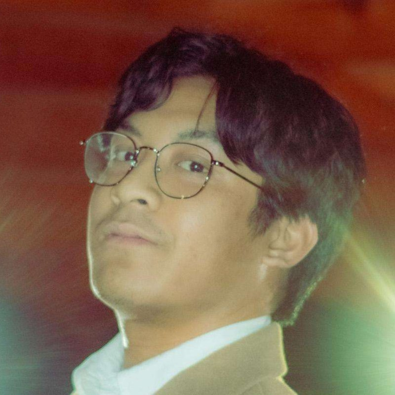

Leo Ragual

Summary
Greetings, I'm Leo. A passionate programmer for 3+ years centered on full-stack development. Proficient with using React framework for building my projects. I enjoy learning about new technology every day. My biggest strength is working alongside a team to accomplish a goal.
Education
Bachelor of Applied Science in Software Development Expected Graduation 2027
Green River College
Relevant Coursework:- Systems Programming
- Web Development Fundamentals
Associate Of Arts in Computer Science Graduated 2025
Renton Technical College Vice Presidents List
Relevant Coursework:- Object Oriented Programming
- Full Stack Development (MERN Stack)
- Next.js Development
- Relational Database Development (SQL)
- Algorithms
Skills & Certifications
- Languages: Java, Javascript, SQL
- HTML/CSS, JSON, Express, REST API, Node.js
- Frameworks: React, Next.js, React Native
- Tools: Github, Git, VSCode
- Soft Skills: Communication, Public Speaking
Work Experience
Freelance Mobile Developer - Remote Jan 2025 - Present
- Built and maintain a daily-use mobile Bible app in Tigrinya for a community of over 2 million speakers.
- The app delivers scripture access, interactive photo gallery, and offline usability, supporting everyday spiritual engagement.
- Developed with React Native, implementing an interactive image gallery, PDF renderer, and chapter selection system. Integrated local storage for efficient offline access and content management.
Renton Technical College - Renton, WA
ASG Treasurer
- Ensured 100% accuracy in financial records for S&A fees by implementing a excel form sheet to track the budget.
- Increased student engagement by 30% within 6 months by organizing interactive events and tripling the number of clubs.
- Mentored python workshops to 20+ people students of different levels, teaching them the fundamentals and giving practice problems
Achievements and Activities
- Phi Theta Kappa - All-Washington Academic Team, 2025
- Hosted Mentor Mesh Tech Meetup - 2025
- 3rd place in HackTheBox Cypher Siege Event